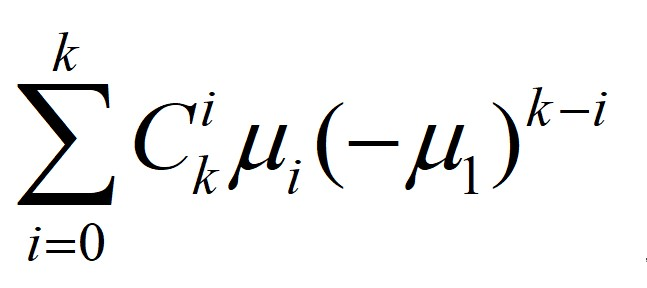
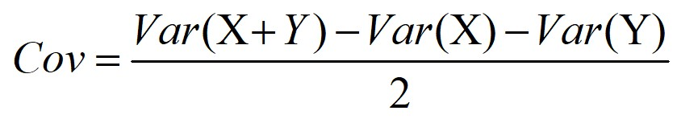
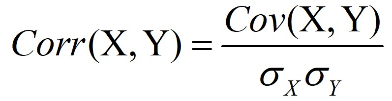

输入：
在数值框内（前两行）输入概率所对应的数值。
在这里可选择输入单样本（一组数据）或双样本（两组数据）
例如：2.3 0.8 12/5 3
在概率值框内输入概率值，概率值总和为1，数据长度与样本长度相同。
如： 0.4 2/5 0.1 0.1
K值用来计算k阶矩，如有需要可输入
输入完毕后点击“确认”键进行计算。
输出：
当输入单样本时，在下方显示期望、方差、峰度系数等，如果输入了k值，还在下方显示k阶原点矩和k阶中心矩。
只有当输入双样本时，才会输出样本的协方差和相关系数。
注：
1.“是否使用等概率”按钮的优先级高于概率数据输入框。
2.输入时小数分数均可识别，但计算过程及显示都是以小数方式。
| k阶中心矩 |  |
| 协方差 |  |
| 相关系数 |  |